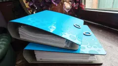

Анализ
Для организаций и индивидуальных предпринимателей объективный юридический анализ предлагаемой сделки - эффективный инструмент для ведения переговором.

Арбитражные споры: представительство в арбитражных судах;
- Договорная работа: разработка, анализ и экспертиза договоров, соглашений и дополнений, подготовка возражений;
- Юридическое сопровождение;
- Защита клиента при проведении налоговых проверок;
- Экспертизы: почерковедческая, документарная, строительная;
- Защита клиента при проведении проверок сетевой организацией приборов учета (безучетное потребление).
